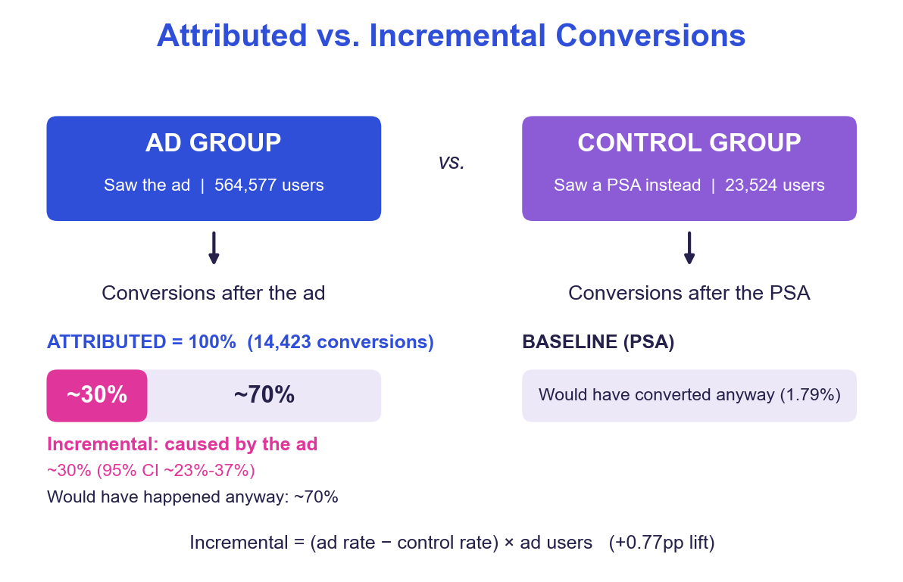

A/B Test Incremental Conversions
Ad platforms count every conversion after an ad as caused by it. In a randomized experiment with 588,101 users and only a 4% control group, the ad raised conversion by +0.77pp (95% CI 0.60–0.94pp), so only ~30% of attributed conversions were incremental. A z-test, a bootstrap and logistic regression all agree.